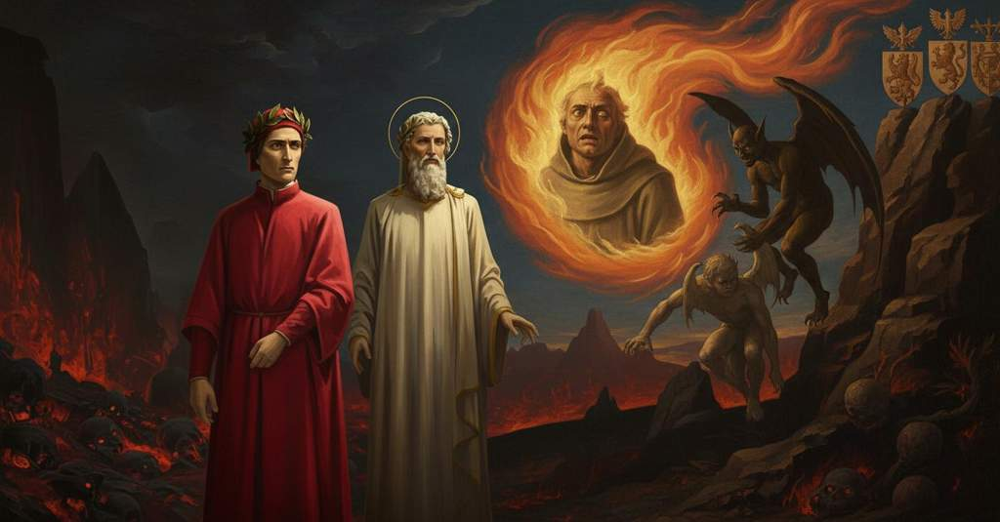

Inferno — Canto 27

Dante incontra Guido da Montefeltro, il quale, dopo aver chiesto notizie sulla Romagna, racconta di come fu dannato per un consiglio fraudolento dato a Bonifacio VIII, che gli offrì un'assoluzione preventiva rivelatasi invalida di fronte alla logica diabolica. Dante meets Guido da Montefeltro, who, after asking for news of Romagna, recounts how he was damned for fraudulent counsel given to Boniface VIII, who offered him a preemptive absolution that proved invalid against diabolical logic. ダンテはグイド・ダ・モンテフェルトロに出会う。彼はロマーニャの消息を尋ねた後、ボニファティウス8世に与えた欺瞞的な助言のために地獄に堕ちた経緯を語り、その際教皇から与えられた事前の免罪が悪魔の論理の前で無効となったことを明かす。
1
Già era dritta in sù la fiamma e queta
Already the flame was upright and quiet
炎はすでにまっすぐに立ち、静かであった
2
per non dir più, e già da noi sen gia
to speak no more, and already it was going from us
もはや語ることもなく、すでに我々のもとから去ろうとしていた
3
con la licenza del dolce poeta,
with the sweet poet’s permission,
かの優しき詩人の許しを得て。
4
quand’ un’altra, che dietro a lei venìa,
when another one, that came on behind it,
その時、その背後から来たもう一つの炎が、
5
ne fece volger li occhi a la sua cima
made us turn our eyes to its tip
我々の目をその先端に向けさせた
6
per un confuso suon che fuor n’uscia.
for a confused sound that issued from it.
そこから漏れ出る不明瞭な音のために。
7
Come ’l bue cicilian che mugghiò prima
As the Sicilian bull that first bellowed
かのシチリアの牛が最初に吼えたように
8
col pianto di colui, e ciò fu dritto,
with the cry of him—and this was just—
その者の嘆きをもって、そしてそれは正しかった、
9
che l’avea temperato con sua lima,
who had tempered it with his file,
自身のやすりでそれを仕上げた者の、
10
mugghiava con la voce de l’afflitto,
bellowed with the voice of the afflicted one,
苦しむ者の声で吼えていた、
11
sì che, con tutto che fosse di rame,
so that, although it was of bronze,
そのため、それが銅でできていたにもかかわらず、
12
pur el pareva dal dolor trafitto;
it still seemed pierced through by the pain;
苦痛に貫かれているかのように見えた。
13
così, per non aver via né forame
so, from having no way or outlet
そのように、道も穴もないために
14
dal principio nel foco, in suo linguaggio
at first in the fire, into its own language
炎の根元には、その言葉へと
15
si convertïan le parole grame.
the sorrowful words were converted.
哀れな言葉は変換されていた。
16
Ma poscia ch’ebber colto lor vïaggio
But after they had found their path
しかし言葉がその道のりを見出し
17
su per la punta, dandole quel guizzo
up through the point, giving it that quiver
先端まで上り、それにあの震えを与えると
18
che dato avea la lingua in lor passaggio,
that the tongue had given them in their passage,
通り過ぎる際に舌が与えたあの震えを、
19
udimmo dire: «O tu a cu’ io drizzo
we heard it say: “O you to whom I direct
我々はこう言うのを聞いた、「おお、汝、我の声を
20
la voce e che parlavi mo lombardo,
my voice and who just now were speaking Lombard,
向ける者よ、そして今しがたロンバルディアの言葉を話した者よ、
21
dicendo “Istra ten va, più non t’adizzo”,
saying ‘Now go your way, I vex you no more,’
『今や去れ、もはやそなたを促しはせぬ』と言って、
22
perch’ io sia giunto forse alquanto tardo,
though I have perhaps arrived a little late,
我が至るのがおそらく少々遅かったとしても、
23
non t’incresca restare a parlar meco;
let it not displease you to stay and speak with me;
我と話すために留まるを厭うなかれ。
24
vedi che non incresce a me, e ardo!
you see it does not displease me, and I burn!
見よ、我は厭わぬ、そして我は燃えているのだ！
25
Se tu pur mo in questo mondo cieco
If you but now into this blind world
もし汝が今しがたこの盲目の世界に
26
caduto se’ di quella dolce terra
have fallen from that sweet Latin land
落ちてきたのであれば、かの優しきラテンの地から
27
latina ond’ io mia colpa tutta reco,
from which I bring all of my guilt,
我が罪のすべてを運び来たったかの地から、
28
dimmi se Romagnuoli han pace o guerra;
tell me if the Romagnols have peace or war;
ロマーニャの人々が平和にあるか戦いにあるか、我に告げよ。
29
ch’io fui d’i monti là intra Orbino
for I was from the mountains there between Urbino
なぜなら我はそこの山々の者、ウルビーノと
30
e ’l giogo di che Tever si diserra».
and the peak from which the Tiber is unsealed.”
テヴェレ川が源を発する分水嶺の間の者ゆえに」。
31
Io era in giuso ancora attento e chino,
I was still below, attentive and bent over,
私は下にいて、なおも注意深く身をかがめていた、
32
quando il mio duca mi tentò di costa,
when my duke touched me on the side,
その時、我が導き手が私の脇腹に触れ、
33
dicendo: «Parla tu; questi è latino».
saying: “You speak; this one is Latin.”
言った、「そなたが話すがよい。この者はラテン人だ」。
34
E io, ch’avea già pronta la risposta,
And I, who had my answer ready now,
そして私、すでに返答を用意していた私は、
35
sanza indugio a parlare incominciai:
without delay began to speak:
ためらうことなく話し始めた。
36
«O anima che se’ là giù nascosta,
“O soul who are hidden down there below,
「おお、かの下に隠れている魂よ、
37
Romagna tua non è, e non fu mai,
your Romagna is not, and never was,
あなたのロマーニャは今も、そしてかつても、
38
sanza guerra ne’ cuor de’ suoi tiranni;
without war in the hearts of its tyrants;
その僭主たちの心に戦乱がなかったことはない。
39
ma ’n palese nessuna or vi lasciai.
but I left no open war there when I came.
しかし、私が去る時、表立った戦は一つもなかった。
40
Ravenna sta come stata è molt’ anni:
Ravenna stands as it has stood for many years:
ラヴェンナは長年そうであったように今もある。
41
l’aguglia da Polenta la si cova,
the eagle of Polenta broods over it,
ポレンタの鷲がそこに巣ごもり、
42
sì che Cervia ricuopre co’ suoi vanni.
so that it covers Cervia with its pinions.
その翼でチェルヴィアを覆っている。
43
La terra che fé già la lunga prova
The land that once endured the long trial
かつて長き試練に耐え、
44
e di Franceschi sanguinoso mucchio,
and made of the French a bloody heap,
フランス人たちの血塗られた山を築いた地は、
45
sotto le branche verdi si ritrova.
finds itself again beneath the green claws.
緑の爪の下にある。
46
E ’l mastin vecchio e ’l nuovo da Verrucchio,
And the old mastiff and the new one from Verrucchio,
そしてヴェッルッキオの老いたるマスティフと若きマスティフは、
47
che fecer di Montagna il mal governo,
who made bad government of Montagna,
モンターニャを非道に扱った者たちだが、
48
là dove soglion fan d’i denti succhio.
there where they are accustomed, make an auger of their teeth.
いつもの場所で、その歯で錐をもんでいる。
49
Le città di Lamone e di Santerno
The cities of the Lamone and the Santerno
ラモーネとサンテルノの都は、
50
conduce il lïoncel dal nido bianco,
the young lion from the white nest leads,
白い巣の若獅子に率いられている。
51
che muta parte da la state al verno.
who changes party from summer to winter.
夏から冬へと党派を変える者だ。
52
E quella cu’ il Savio bagna il fianco,
And that city which the Savio bathes on its flank,
そしてサヴィオ川がその脇を洗う都は、
53
così com’ ella sie’ tra ’l piano e ’l monte,
just as it sits between the plain and the mountain,
平野と山の間にあるがごとく、
54
tra tirannia si vive e stato franco.
lives between tyranny and a free state.
僭主制と自由な状態の間を生きている。
55
Ora chi se’, ti priego che ne conte;
Now who you are, I pray you, tell us;
さて、あなたが誰か、語っていただきたい。
56
non esser duro più ch’altri sia stato,
be no more harsh than another has been,
他の者（私）がした以上に頑なにならぬよう、
57
se ’l nome tuo nel mondo tegna fronte».
so may your name in the world hold its own.”
あなたの名が地上でその名を保つことを願うなら」。
58
Poscia che ’l foco alquanto ebbe rugghiato
After the fire had roared a while
炎がしばし轟いた後、
59
al modo suo, l’aguta punta mosse
in its own way, it moved its sharp tip
その流儀で、鋭い先端は動いた
60
di qua, di là, e poi diè cotal fiato:
here and there, and then gave forth such a breath:
あちらこちらへと、そしてこのような息を吐いた。
61
«S’i’ credesse che mia risposta fosse
“If I believed that my reply were
「もし私の答えが、
62
a persona che mai tornasse al mondo,
to a person who would ever return to the world,
かつて世に戻るような者へのものであったなら、
63
questa fiamma staria sanza più scosse;
this flame would stay without more shaking;
この炎はこれ以上揺れることなく留まるだろう。
64
ma però che già mai di questo fondo
but since never from this depth
しかし、この深淵からかつて
65
non tornò vivo alcun, s’i’ odo il vero,
did anyone alive return, if what I hear is true,
生きて戻った者は誰もおらぬのだから、もし私が聞くことが真実なら、
66
sanza tema d’infamia ti rispondo.
without fear of infamy I answer you.
不名誉を恐れることなく、汝に答えよう。
67
Io fui uom d’arme, e poi fui cordigliero,
I was a man of arms, and then a cord-wearer,
私は武人であり、そしてフランチェスコ会の修道士となった、
68
credendomi, sì cinto, fare ammenda;
believing, so girded, to make amends;
そのように帯を締め、罪を償えると信じて。
69
e certo il creder mio venìa intero,
and surely my belief would have come whole,
そして確かに、私の信仰は成就したであろう、
70
se non fosse il gran prete, a cui mal prenda!,
were it not for the great priest, may ill befall him!,
もしあの大司祭がいなければ、彼に災いあれ！
71
che mi rimise ne le prime colpe;
who put me back into my first sins;
彼が私を最初の罪へと引き戻したのだ。
72
e come e quare, voglio che m’intenda.
and how and why, I want you to hear from me.
そして、いかにして、なぜかを、汝に聞いてもらいたい。
73
Mentre ch’io forma fui d’ossa e di polpe
While I was the form of bones and pulp
私が骨と肉の姿であった間、
74
che la madre mi diè, l’opere mie
that my mother gave me, my deeds
母が私に与えた、私の行いは
75
non furon leonine, ma di volpe.
were not those of a lion, but of a fox.
獅子のものではなく、狐のものであった。
76
Li accorgimenti e le coperte vie
The cunning stratagems and the covert ways
策略と隠された道を
77
io seppi tutte, e sì menai lor arte,
I knew them all, and so plied their art,
私はすべて知り、その術を駆使したので、
78
ch’al fine de la terra il suono uscie.
that to the ends of the earth the sound went out.
地の果てまでその名は響き渡った。
79
Quando mi vidi giunto in quella parte
When I saw myself arrived at that part
私が人生のあの時期に達したのを見た時、
80
di mia etade ove ciascun dovrebbe
of my age where everyone should
すべての者が
81
calar le vele e raccoglier le sarte,
lower the sails and gather in the ropes,
帆を下ろし、綱をまとめるべき、
82
ciò che pria mi piacëa, allor m’increbbe,
that which pleased me before, then grieved me,
かつて私を喜ばせたものが、その時は私を苦しめ、
83
e pentuto e confesso mi rendei;
and repentant and confessed I gave myself up;
悔い改め、告解して、私は身を捧げたのだ。
84
ahi miser lasso! e giovato sarebbe.
ah, wretched me! and it would have availed.
ああ、哀れな私よ！そして、それは救いとなったであろうに。
85
Lo principe d’i novi Farisei,
The prince of the new Pharisees,
新しきファリサイ人の長は、
86
avendo guerra presso a Laterano,
waging war near the Lateran,
ラテラノの近くで戦をしながら、
87
e non con Saracin né con Giudei,
and not with Saracens nor with Jews,
サラセン人ともユダヤ人ともでなく、
88
ché ciascun suo nimico era cristiano,
for each of his enemies was a Christian,
彼の敵は一人残らずキリスト教徒であったのだから、
89
e nessun era stato a vincer Acri
and none had been at the conquest of Acre
そして誰もアクリを征服しに行った者も
90
né mercatante in terra di Soldano,
nor a merchant in the land of the Sultan;
ソルダノの地で商う者もいなかった、
91
né sommo officio né ordini sacri
neither his high office nor sacred orders
彼は最高の職務も聖なる位階も
92
guardò in sé, né in me quel capestro
did he regard in himself, nor in me that cord
自らに顧みず、また私においてはあの綱をも
93
che solea fare i suoi cinti più macri.
that used to make its wearers leaner.
それを締める者をより痩せさせる常であったものを。
94
Ma come Costantin chiese Silvestro
But as Constantine sought Sylvester
しかしコンスタンティヌスがシルウェステルに
95
d’entro Siratti a guerir de la lebbre,
within Soracte to be cured of his leprosy,
シラッテの中から、その癩病を癒すようにと求めたように、
96
così mi chiese questi per maestro
so this one sought me for a master
この者は私を師として求めた、
97
a guerir de la sua superba febbre;
to cure his proud fever;
彼の傲慢な熱病を癒すために。
98
domandommi consiglio, e io tacetti
he asked me for counsel, and I was silent
彼は私に助言を求め、私は黙っていた
99
perché le sue parole parver ebbre.
because his words seemed drunken.
彼の言葉が酔っているように見えたからだ。
100
E’ poi ridisse: “Tuo cuor non sospetti;
And then he said again: “Let not your heart suspect;
すると彼は再び言った、「汝の心よ疑うなかれ。
101
finor t’assolvo, e tu m’insegna fare
I absolve you now, and you teach me how
今から汝を赦免する、だから私に教えよ
102
sì come Penestrino in terra getti.
to cast Penestrino to the ground.
いかにしてパレストリーナを地に叩きつけるかを。
103
Lo ciel poss’ io serrare e diserrare,
The heavens I can lock and unlock,
天を私は閉ざしも開けもできる、
104
come tu sai; però son due le chiavi
as you know; for the keys are two
汝が知る通り。それゆえに二つの鍵があるのだ
105
che ’l mio antecessor non ebbe care”.
that my predecessor did not hold dear”.
私の先任者が尊ばなかったものが」。
106
Allor mi pinser li argomenti gravi
Then the grave arguments pushed me
その時、その重大な論拠が私を追い詰めた
107
là ’ve ’l tacer mi fu avviso ’l peggio,
to where silence seemed to me the worse course,
沈黙こそが最悪だと私に思わせる場所へと、
108
e dissi: “Padre, da che tu mi lavi
and I said: “Father, since you wash me
そして私は言った、「父よ、あなたが私を洗い清めてくださるからには
109
di quel peccato ov’ io mo cader deggio,
of that sin into which I must now fall,
私が今から堕ちねばならぬその罪から、
110
lunga promessa con l’attender corto
a long promise with a short keeping
長い約束と短い履行が
111
ti farà trïunfar ne l’alto seggio”.
will make you triumph in your high seat”.
あなたを高き座所で勝利させるでしょう」。
112
Francesco venne poi, com’ io fu’ morto,
Francis came then, when I was dead,
私が死んだ後、フランチェスコが来た、
113
per me; ma un d’i neri cherubini
for me; but one of the black cherubim
私のために。しかし黒いケルビムの一人が
114
li disse: “Non portar: non mi far torto.
said to him: “Do not take him; do not wrong me.
彼に言った、「連れて行くな、私に不正をなすな。
115
Venir se ne dee giù tra ’ miei meschini
He must come down among my minions
彼は私の哀れな者たちの下へ来ねばならぬ
116
perché diede ’l consiglio frodolente,
because he gave the fraudulent counsel,
なぜなら彼は欺瞞の助言を与えたからだ、
117
dal quale in qua stato li sono a’ crini;
for which I have been at his hair ever since;
その時からずっと私は彼の髪を掴んでいる。
118
ch’assolver non si può chi non si pente,
for one cannot be absolved who does not repent,
悔い改めぬ者は赦され得ず、
119
né pentere e volere insieme puossi
nor can one repent and will at once,
悔い改めると同時に（罪を）欲することはできぬ
120
per la contradizion che nol consente”.
because of the contradiction that does not permit it”.
それを許さぬ矛盾ゆえに」。
121
Oh me dolente! come mi riscossi
Oh wretched me! how I was startled
ああ、哀れな私よ！いかに私は身震いしたことか
122
quando mi prese dicendomi: “Forse
when he took me, saying: “Perhaps
彼が私を捕らえ、こう言った時に、「おそらく
123
tu non pensavi ch’io löico fossi!”.
you did not think I was a logician!”.
汝は私が論理学者だとは思わなかっただろう！」。
124
A Minòs mi portò; e quelli attorse
To Minos he brought me; and he twisted
彼は私をミノスのもとへ運び、かの者はねじった
125
otto volte la coda al dosso duro;
his tail eight times around his hard back;
堅い背中に八度、尾を。
126
e poi che per gran rabbia la si morse,
and after he had bitten it in great rage,
そして激しい怒りのあまりそれを噛んでから、
127
disse: “Questi è d’i rei del foco furo”;
he said: “This one is for the thieves of the stolen fire”;
言った、「こやつは盗みの火の罪人の一人だ」。
128
per ch’io là dove vedi son perduto,
for which I am lost here where you see me,
そのため私は、あなたが見るこの場所で、破滅し、
129
e sì vestito, andando, mi rancuro».
and so clothed, going along, I lament».
このように衣をまとい、歩きながら、嘆き悲しんでいるのです」。
130
Quand’ elli ebbe ’l suo dir così compiuto,
When he had thus completed his speech,
彼がその言葉をこのように終えると、
131
la fiamma dolorando si partio,
the flame, grieving, departed,
炎は苦しみながら去って行った、
132
torcendo e dibattendo ’l corno aguto.
twisting and shaking its sharp horn.
その鋭い角をねじり、振りながら。
133
Noi passamm’ oltre, e io e ’l duca mio,
We passed on, I and my duke,
我らは先へ進んだ、私と我が案内者は、
134
su per lo scoglio infino in su l’altr’ arco
up the ridge onto the other arch
岩棚を登って次の橋の上まで
135
che cuopre ’l fosso in che si paga il fio
that covers the ditch where the penalty is paid
その下では溝が覆われており、そこでは代償が支払われる
136
a quei che scommettendo acquistan carco.
by those who, sowing discord, acquire a burden.
不和の種を蒔いて重荷を負う者たちに。